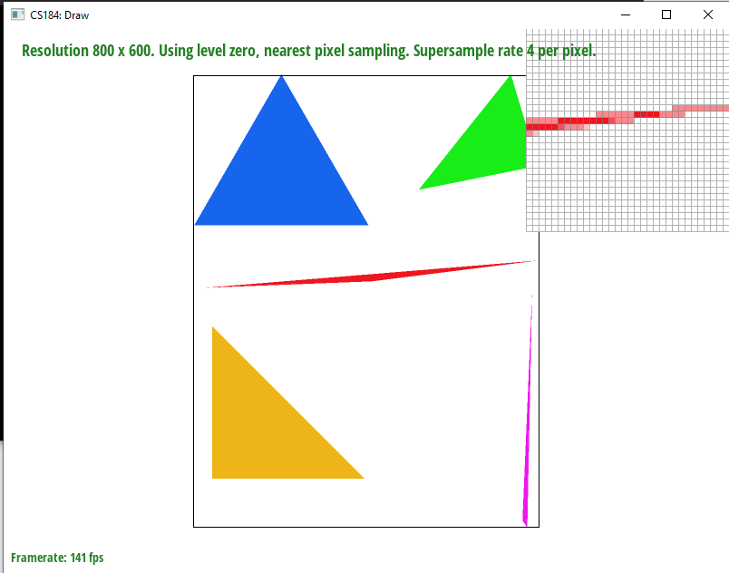

Overview:
Task1:
To rasterize triangles, we sample points on the screen space to see whether that point is within the triangle that is being rasterized.
If the point is within the triangle, the pixel corresponding to that point on the frame buffer will be colored in.
The algorithm I used does this by finding the minimum and maximum x and y coordinates between all the vertices of the triangle, rounding down
on the minimum and rounding up on the maximum. This establishes a box that covers the entire triangle. Then, it iterates over all the points in the box,
sampling at half integer coordinates in screen space. To check whether the sample is within the triangle, the algorithm checks if the sample point
is inside of each of the three lines comprising the edges of the triangle, counting the point as inside the triangle if it is inside all three lines.
However, the line equation can result in either values > 0 or < 0 being considered within the triangle depending on whether we define the lines going
counterclockwise around the vertices or clockwise around the vertices. Since the function doesn't check what direction the lines are formed through, the
algorithm instead checks that all of the line calculations end up greater than or equal to 0, or less than or equal to 0. This way, points within the triangle
are marked as such regardless of which direction the vertices were chosen. Finally, if the point is determined to be in the triangle, the corresponding pixel
is filled in the framebuffer.
This algorithm is the one that checks each sample within the bounding box of the triangle, so for obvious reasons it can't be worse than itself.

Task2:
The supersampling algorithm works by iterating through the box bounding the triangle as was done in Task 1, but instead of only sampling the midpoint of
the pixels, it divides each sampled pixel area into N even squares, where N is the sampling rate, and then sampling at the midpoint of each of these squares.
Since the sample rate is restricted to be either 1, 4, 9, or 16, we ignore the case where the sampled area can't be split up into even squares. The sample buffer
now needs to hold N samples for each pixel on the framebuffer, so it is resized to hold a factor N more or less entries whenever the sample rate is changed.
In addition, the fill pixel function now takes in another parameter which is sample, so that in the case of supersampling, N samples are stored at each corresponding
x, y coordinate in the sample buffer. For line and point rasterization, the one taken sample for each point is stored in all N entries for that point, which will average
out to be equivalent to doing one sample for line and point rasterization when it is resolved to the framebuffer. The resolve_to_framebuffer function takes the N samples
for each pixel in the framebuffer and we average their colors out by summing every one of their R, G, and B channels individually, and then dividing them by N.
Finally, it puts that averaged color onto the framebuffer.
Supersampling is useful because it can be used for antialiasing. We antialiased here using supersampling and then downsampling, which effectively works as if we
convolved the image by a 1 pixel box blur and then sampled. In both cases, the high frequency changes of the image are attenuated, reducing the amount of aliasing.

With no supersampling, we observe jaggies when at the edges of the triangle where we quickly change from a filled pixel to an empty pixel
 With a sample rate a 4, some of the pixels that were on the boundaries of the triangle and were colored either fully or not at all are now averaged to intermediate
colors. Thus, the higher frequency changes are slightly attenuated, reducing the aliasing.
This has a sample rate of 16, so the effects are essentially the same as the 4 sample case, but with more accuracy and lowering the high frequency changes further.
Task3:
The robot is supposed to be waving, with its left arm to its side and its right arm in the air, with a slight head tilt towards its left.
Task4:
Barycentric coordinates is a coordinate system for triangles that essentially introduces a weighting for each vertex of the triangle that changes depending on
a point's distance from each vertex. These weights allow you to interpolate values within the triangle from just the vertices. As an example, when we make a colortri
where there is one solid red, green, and blue vertex, we use barycentric coordinates to interpolate the colors within the triangle. The areas closer to the red vertex are more red,
the areas closer to the green vertex are more green, and the areas closer to the blue vertex are more blue. When moving away from one of the vertex, the "color weight" from that
vertex becomes smaller, while the weight of the vertices being approached increase, increasing the value of those vertices' colors at the new point.